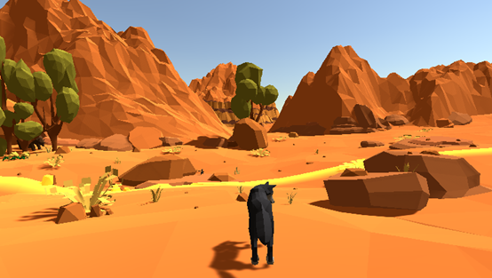
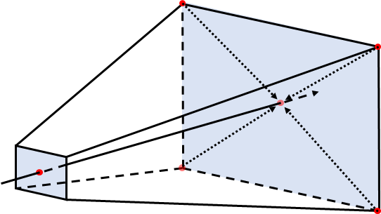
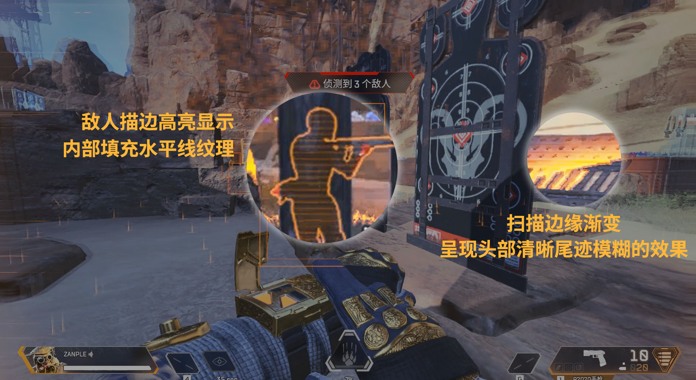
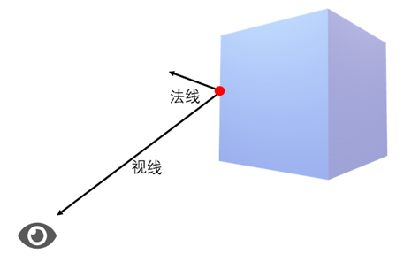

扫描效果在科幻游戏中比较常见，如APEX英雄、命运2、杀出重围、全境封锁2等中都有体现。大致的效果为光线扫描全场景，并高亮显示敌方（可透过障碍物）。这里我选取了APEX英雄中“寻血猎犬”的“上帝之眼”技能为参考，按下“Q”后在短时间内扫描场景并显示范围内的敌人。

1. 效果分析
扫描效果从当前视角蔓延，并根据扫描的位置显示对应的敌方，需要计算当前位置到扫描位置的距离。如果对场景中所有的对象进行计算，再将颜色叠加到物体上的效率显然较低。因此使用类似全局雾效基于屏幕后处理的实现方法，则不需要更改场景内渲染物体所使用的Shader代码，而仅仅依靠一次屏幕的后处理的步骤即可。
2. 直接使用深度值
扫描效果直接从相机位置发出，因此尝试直接使用相机获得的场景深度信息进行处理。
在脚本中，获得到深度信息后我们就可以得到场景中物体与相机的深度关系。利用Unity Time类中的deltaTime来影响扫描效果的移动
1 | this.dis += Time.deltaTime * this.velocity; |
然后通过OnRenderImage()函数抓取render texture，再通过Graphics.Blit()函数传递给虚拟材质中的Shader进行后处理。
在Shader中获取每个像素的深度信息，与扫描网所在位置比较进行颜色的叠加即可。

通过直接使用深度值信息进行叠加我们可以获得如上图的效果，但是这样的效果不够理想。首先是扫描网由摄像机所在位置发出，即从近裁剪平面发出，如果是用在固定视角的第一人称游戏不会有太大问题，但是应用在第三人称视角游戏的效果则不够理想，并且在移动过程中会影响后续的敌人高亮显示问题。
3. 使用深度缓冲重构世界空间坐标
在上面的方法中是从摄像机发出扫描网的，但是我们想在角色所在位置发出，并且我们在游戏中可以看到的效果都是圆的而不是平面推出的方式。因此使用全局雾效里的使用深度缓冲来重构世界空间坐标。

通过对图形空间下的视锥体的四个顶点进行插值，然后通过采样当前像素的深度值，将这个线性深度值与插值后的结果相乘便能得到世界空间中相机到远裁剪平面的向量，其大小等于到采样像素的距离。最后再加上相机的世界空间坐标，我们就可以得到每个像素的世界空间坐标了。
当然，也可以通过深度和像素在屏幕上的坐标以及CVV到屏幕矩阵的逆投影矩阵逆摄像机矩阵计算出像素的世界空间坐标，然后和在世界空间中定义的扫描平面计算距离。但这样的做法需要涉及到矩阵的计算。
4. 扫描网效果
扫描网的效果上我选取的还是APEX英雄中“寻血猎犬”的技能为例：

扫描网的移动上，为了避免扫描网的无限延伸（到天空盒），对扫描网的距离进行判断。
1 | if (juli < _ScanDistance && juli > _ScanDistance - _ScanWidth && linearDepth < 1) |
同时，另扫描网的移动速度随着时间增加（实现扫描网逐渐加速的效果）。
1 | ScanDistance += Time.deltaTime * 50; |
扫描网的视觉效果由4个变量来控制，分别为边缘清晰度、边缘颜色、中部颜色、尾迹颜色。并使用水平线填充扫描网。
1 | _HeadTough("边缘清晰度", float) = 10 |
5. 敌人高亮显示
在APEX英雄中“寻血猎犬”的技能中，被扫描到的敌人会进行描边处理，并且这个描边是可以透过障碍物看到的。
实现这样的效果只需要利用两个Pass分别对被遮住和未被遮住的物体进行处理即可。然后根据观察方向和目标多边形的法线方向的夹角来判断目标的边缘，从而实现描边效果。

敌人的高亮描边效果应该在扫描网扫描目标敌方后才出现，并且这个效果应该只会保持一定的时间然后恢复正常。因此添加一个BeenScan脚本来控制目标敌方的不同显示效果。
1 | public void Highlight() { |
最后，在ScanEffect中判断扫描网是否扫描到了目标敌方来调用BeenScan。
1 | foreach (BeerBeenScan s in _beenscanB) |
6. 最终效果

[1] “Special Effects with Depth” talk at SIGGRAPH - Kuba Cupisz